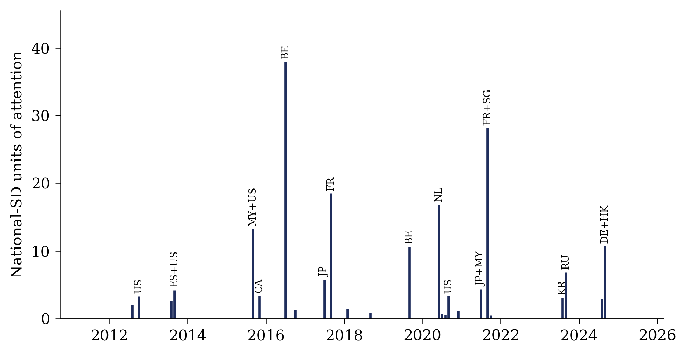

Panda Shocks
Panda ShocksPanda Shocks
The Soft-Power Shock (SPS) series from giant panda births abroad · 24 host jurisdictions · 2004–2025
A soft-power shock (SPS) is an exogenous rise in a foreign public's exposure to a country's soft-power asset that carries no change in policy. Panda Shocks identifies it from the births of giant pandas at foreign zoos. When a panda is born abroad, the zoo announces it, national media cover it, and the host public's interest in China's best-known symbol jumps. The month of the birth is set by biology, through delayed implantation and frequent pseudo-pregnancies, and no government decides anything on that date. Each birth is measured by the dose of attention it draws: the jump in the host's Google search attention to the giant panda over the announcement day and the two days after, relative to the week before, in units of the host's own day-to-day standard deviation. The doses are summed to a host × month SPS series. Over 2011–2025 the SPS (national dose) has 33 nonzero host-months in 14 countries, with a median dose of 3.08 standard deviations. The release also contains the 491-event database behind the series with sources, hard political events as a benchmark, breeding attempts, placebo animal events, policy regimes, and every daily window from which a dose is computed.
The SPS by host
Each spike is one usable giant-panda birth announced in that month; its height is the dose, the jump in the host's attention to the panda in national-SD units.
Download this host's series as CSV · source: panda_shocks_monthly.csv
| month announced | SPS (national dose) | SPS (regional dose) | births |
|---|

z_birth_nat, summed across
hosts by month, 2011–2025, in national-SD units of announcement-window attention; spikes of at least
3 units are labeled with the host. The interactive chart above needs JavaScript and an internet connection
for the Plotly library; this image shows the same data without either.Citation
If you use the data, please cite the paper:
@techreport{yeh2026panda,
author = {Yeh, Zong-Wei},
title = {Soft Power Shocks: Does Attention to a Symbol Translate
into Bilateral Exchange?},
institution = {Department of Finance, National Chung Cheng University},
type = {Working Paper},
year = {2026}
}}
Also available as CITATION.bib and CITATION.cff.
Author
Zong-Wei Yeh, Department of Finance, National Chung Cheng University, Chiayi, Taiwan · zweyeh@ccu.edu.tw. Corrections to the event database are welcome by email.